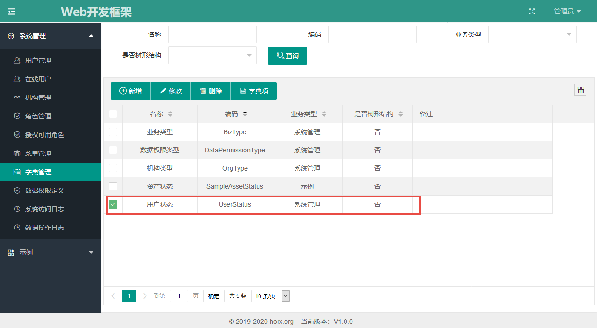
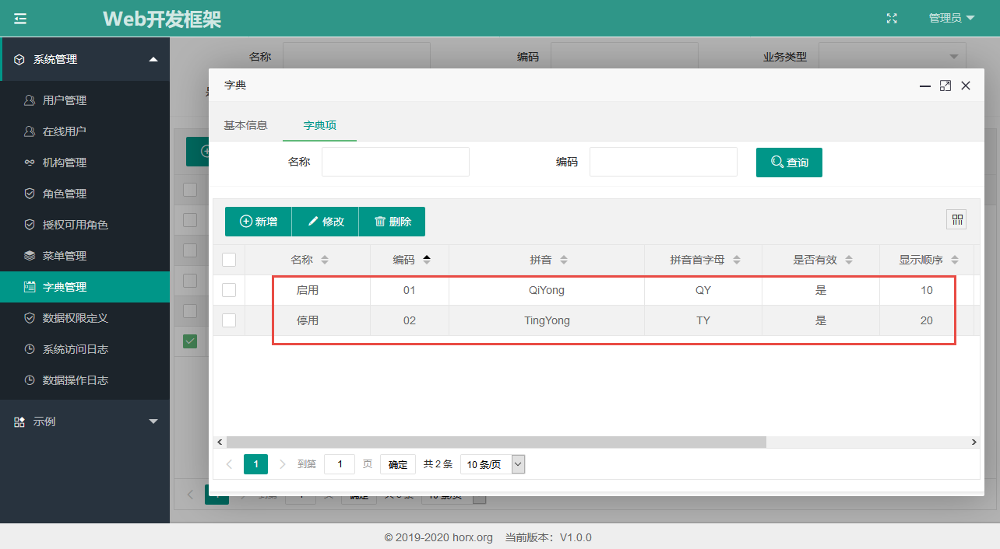
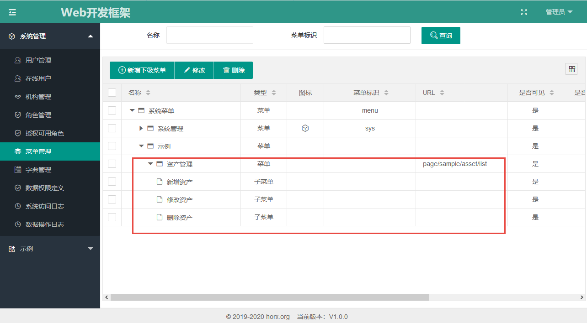
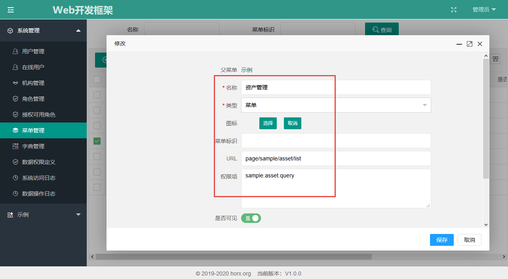
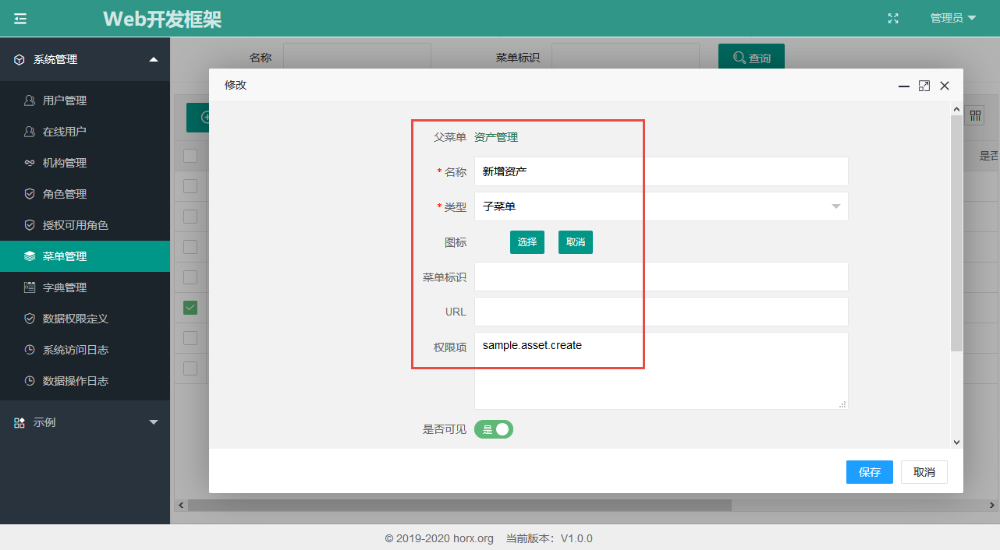
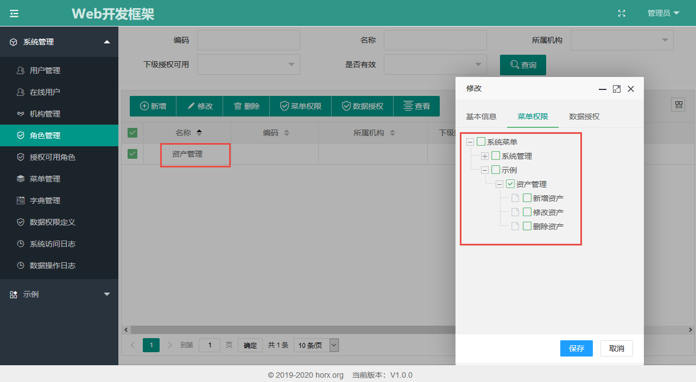
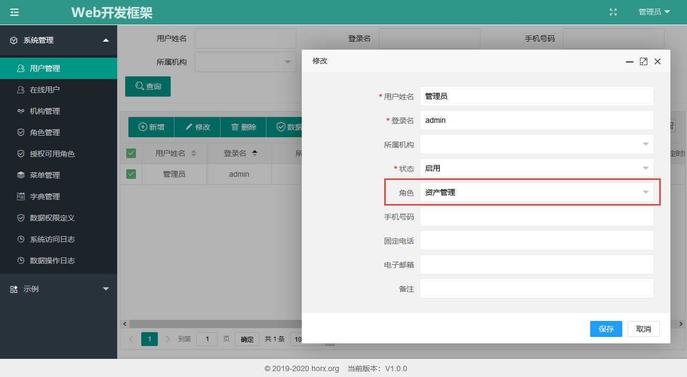
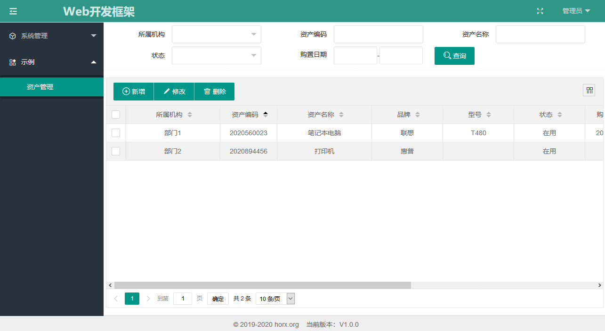
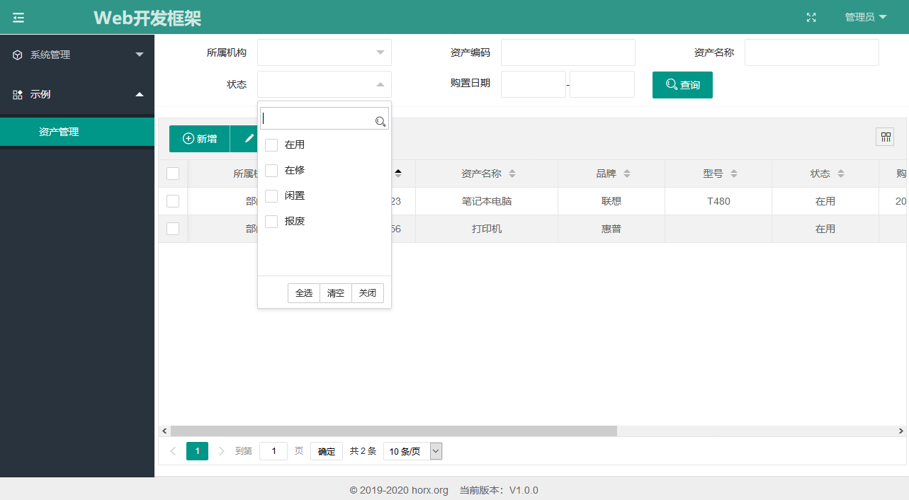
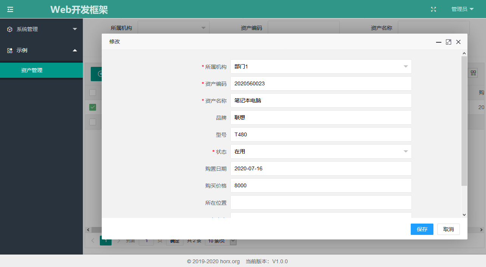

简单设计
这个例子开发一个简单的资产管理页面，实现资产的查询、新增、修改、删除，用java webapp实现。
假定资产包含所属机构、资产编码、资产名称、品牌、型号、状态、购置日期、购买价格、所在位置、负责人、备注等属性。设计数据库表结构如下：
create table wdf_sample_asset ( id bigint not null auto_increment comment 'ID', org_id bigint comment '所属机构ID', code varchar(30) comment '资产编码', name varchar(100) comment '资产名称', brand varchar(30) comment '品牌', model varchar(30) comment '型号', status varchar(2) comment '状态', purchase_date datetime comment '购置日期', price decimal(10,2) comment '购买价格', location varchar(200) comment '所在位置', responsible_person varchar(30) comment '负责人', remarks varchar(500) comment '备注', is_deleted decimal(1) not null default 0 comment '是否删除', create_time datetime(6) comment '创建时间', create_user_id bigint comment '创建用户ID', modify_time datetime(6) comment '最后修改时间', modify_user_id bigint comment '最后修改用户ID', trace_id varchar(50) comment '跟踪ID', primary key (id) ) engine = InnoDB comment '资产';
新建工程
新建一个Maven WebApp工程，目录结构如下：
├─horx-wdf-sample-simple │ ├─src │ │ └─main │ │ └─java │ │ └─resources │ │ └─webapp │ ├─pom.xml
准备工作
从horx-web-framework工程中复制文件：
horx-web-framework/horx-wdf-launcher/horx-wdf-web/src/main/resources --> horx-wdf-sample-simple/src/main/resources
horx-web-framework/horx-wdf-launcher/horx-wdf-web/src/main/webapp --> horx-wdf-sample-simple/src/main/webapp
根据 运行DEMO#修改数据库连接 中的方法把horx-wdf-sample-simple中的数据库连接改成自己的。
在数据库中初始化数据，执行src/main/resources/sql下的脚本，并执行本示例所设计的资产表脚本
然后运行程序，参照 运行DEMO#在IDEA中运行 中的方法，看程序是否能够正常启动。
后台开发
由于这个例子比较简单，后台功能只是简单的查询、新增、修改、删除。
具体代码参见代码库，这里只列出开发了哪些内容：
实体类：org.horx.wdf.sample.simple.domain.Asset
查询条件类：org.horx.wdf.sample.simple.domain.query.AssetQuery
数据库DAO查询接口：org.horx.wdf.sample.simple.mapper.AssetMapper
在resources下增加mybatis mapping文件，mapping/AssetMapper.xml
Service接口：org.horx.wdf.sample.simple.service.AssetService
Service实现类：org.horx.wdf.sample.simple.service.impl.AssetServiceImpl
需要修改的配置：
resources/spring-main.xml中扫描的包：<context:component-scan base-package="org.horx.wdf"> 此处因覆盖示例程序所在的包，不需要改动，否则需要加上自己的包名。
resources/spring/spring-jdbc.xml中mybatis xml文件，需要增加以下红色字体部分：
<bean id="sqlSessionFactory" class="org.mybatis.spring.SqlSessionFactoryBean">
...
<property name="mapperLocations">
<array>
<value>classpath:org/horx/wdf/sys/mapping/*.xml</value>
<value>classpath:mybatis/sys/*.xml</value>
<value>classpath:mapping/*.xml</value>
</array>
</property>
...
</bean>
<bean class="org.mybatis.spring.mapper.MapperScannerConfigurer">
<property name="basePackage" value="org.horx.wdf.sys.mapper,org.horx.wdf.sample.simple.mapper" />
<property name="sqlSessionFactoryBeanName" value="sqlSessionFactory" />
</bean>
前端开发
具体代码参见代码库，这里只列出开发了哪些内容：
页面Controller：org.horx.wdf.sample.simple.controller.AssetPageController
API Controller：org.horx.wdf.sample.simple.controller.AssetApiController
列表页FreeMarker模板文件：webapp/WEB-INF/templates-ftl/sample/asset/list.ftl
编辑页FreeMarker模板文件：webapp/WEB-INF/templates-ftl/sample/asset/edit.ftl
列表页js文件：webapp/js/page/sample/asset/list.js
编辑页js文件：webapp/js/page/sample/asset/edit.js
需要修改的配置：
resources/spring-mvc.xml中扫描的包：<context:component-scan base-package="org.horx.wdf" use-default-filters="false">此处因覆盖示例程序所在的包，不需要改动，否则需要加上自己的包名。
系统配置
在字典管理中增加资产状态：

在菜单管理中增加菜单：


修改资产、删除资产的子菜单界面省略，不同之处是，修改资产的权限是sample.asset.modify，删除资产的权限项是sample.asset.remove
在角色管理中增加角色：
给用户授予角色：
效果展示

